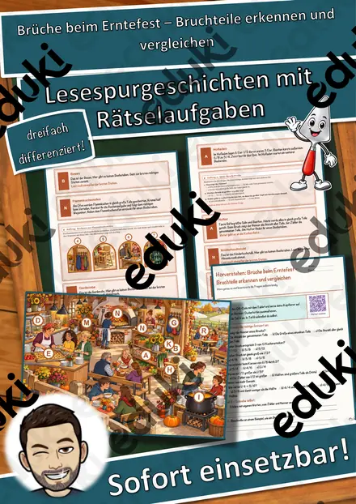
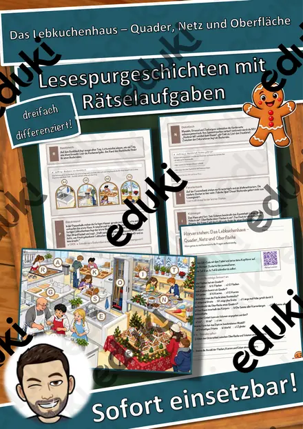
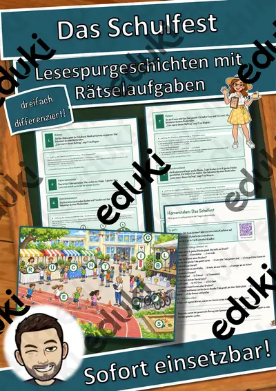
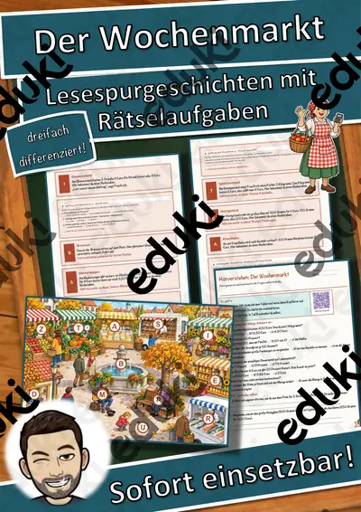
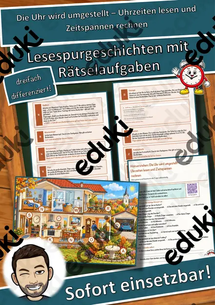
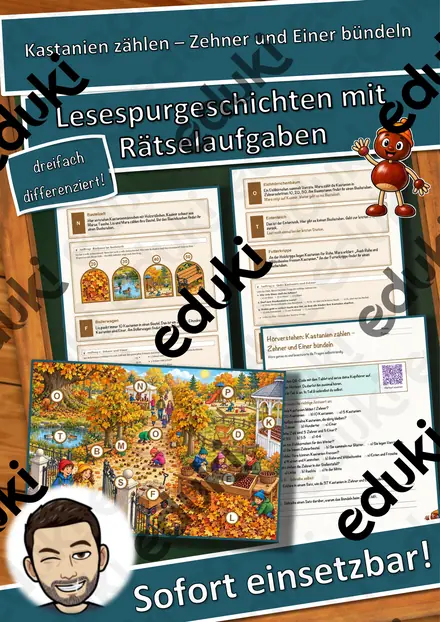

Brüche beim Erntefest – Bruchteile erkennen und vergleichen – Lesespurgeschichte mit Rätselaufgaben (Klasse 6)

Das Lebkuchenhaus – Quader, Netz und Oberfläche – Lesespurgeschichte mit Rätselaufgaben (Klasse 7)

Das Schulfest – Lesespurgeschichte mit Rätselaufgaben (Klasse 6)

Der Wochenmarkt – Lesespurgeschichte mit Rätselaufgaben (Klasse 7)

Die Uhr wird umgestellt – Uhrzeiten lesen und Zeitspannen rechnen – Lesespurgeschichte mit Rätselaufgaben (Klasse 3)

Kastanien zählen – Zehner und Einer bündeln – Lesespurgeschichte mit Rätselaufgaben (Klasse 2)

Quali Mathematik Teil A – rechnen ohne Taschenrechner – Lesespurgeschichte mit Prüfungsaufgaben (Klasse 9)

Rekorde beim Erntefest – Längen, Gewichte und Größen umrechnen – Lesespurgeschichte mit Rätselaufgaben (Klasse 5)

Zinsen berechnen – rund um den Weltspartag – Lesespurgeschichte mit Rätselaufgaben (Klasse 8)
Lesespurgeschichten im Fach Mathematik
Hier trägt das Rechnen die Geschichte: Das Ergebnis einer Aufgabe bestimmt, welche Station als Nächstes kommt. Ein Rechenfehler führt sichtbar in die Irre, also lohnt sich das Nachrechnen von selbst.
Jede Geschichte liegt in drei Niveaustufen vor, die sich in Textlänge, Satzbau und Aufgabenanspruch unterscheiden. Weg, Stationen und Lösungswort bleiben gleich, sodass alle Fassungen gleichzeitig in einer Klasse laufen können.
Themen auf dieser Seite
Beispiele aus dieser Sammlung: Kastanien zählen · Die Uhr wird umgestellt · Rekorde beim Erntefest · Brüche beim Erntefest · Quali Mathematik Teil A · Das Schulfest · Das Lebkuchenhaus · Zinsen berechnen.